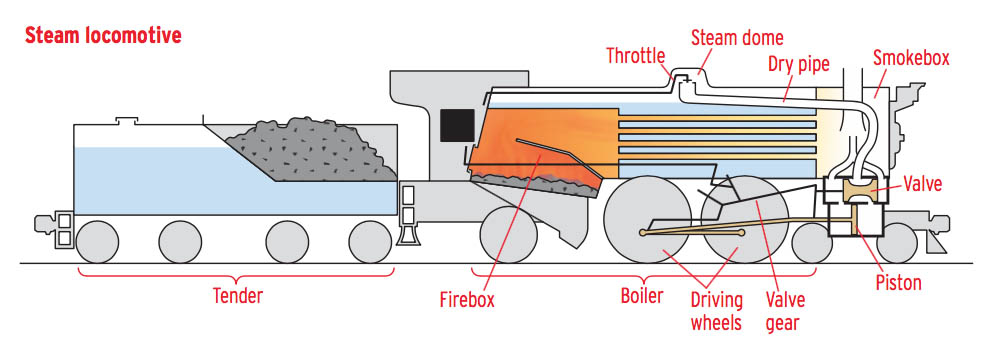
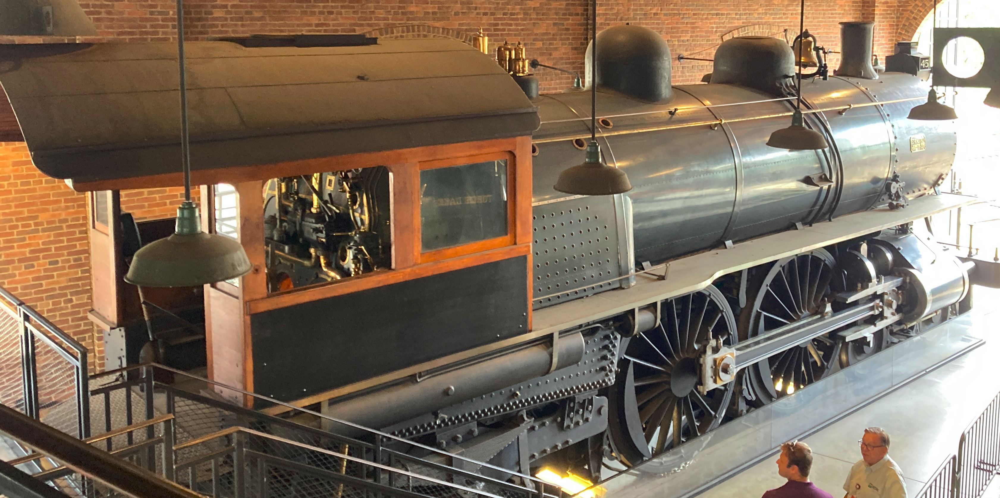

What is a Steam Locomotive?
A steam locomotive is train engine that provides the force to move itself by boiling water to produce steam to turn its pistons. A steam locomotive works by heating water in the main part of the engine. The water is heated by a fire, usually fueled by coal, which is stoked by the train’s operator. When the water is turned into steam, it goes to the top of the engine and is redirected to the pistons. The engine uses a valve to apply steam pressure in both directions of the piston, allowing it to go back and forth, turning the wheels.
The steam locomotive was very influential in it’s day. Below are two historic coal powered steam locomotives.
The Torch Lake Steam Locomotive
The Torch Lake steam locomotive was built by Mason Machine Works in 1873. It hauled ore for the Calumet and Hecla Mining Company on Michigan's Keweenaw Peninsula. The engine is an articulated design. The driving wheels pivot under the boiler, allowing the locomotive to handle sharp curves.
This locomotive is currently the oldest steam locomotive that is still used on a regular basis. It is located at the Greenfield Village Museum in Dearborn Michigan.
The American Locomotive Company Steam Locomotive
The American Locomotive Company of Schenectady, New York, built this locomotive in 1902. It is a 4-4-2 Atlantic type, with four leading wheels, four driving wheels, and two trailing wheels. The Atlantic was designed to pull light wooden passenger cars at high speeds. This locomotive operated on the Michigan Central Railroad's Detroit-Chicago line until heavier steel cars made it obsolete. It is currently located at the Greenfield Village Museum in Dearborn Michigan, however, it is not in use since it’s wheels are too wide for the tracks.
